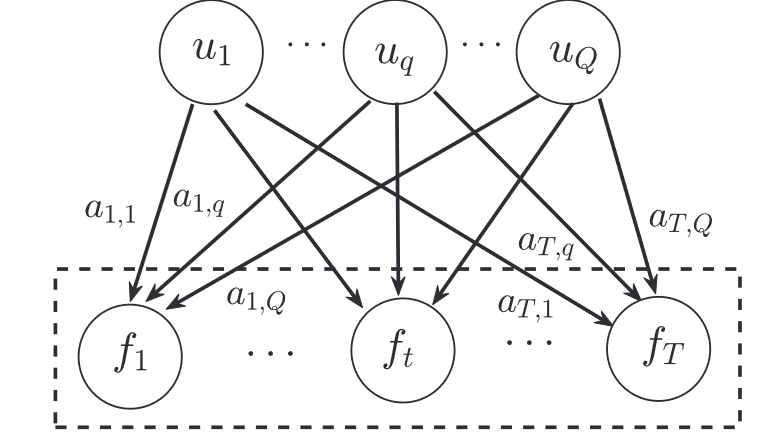

高斯过程
在讨论行为人离散多期学习时，一种合适的方法是非参数拟合——行为人通过思考（或外界信息）获取对应特定状态的最优动作，并更新自身知识库——对任意状态\(\mathbf{s}_t\)，估计\(a^{*}(\mathbf{s}_t)\)的分布，并（通常）选取分布的均值作为下一次遇到\(s_t\)状态时的动作方案。因此，基于高斯核函数的随机过程Gaussian Process（下称“高斯过程”或GP）是一种合适的非参数模型。
参考书目、文献和网站
下文内容中所涉及具体方法的参考文献，参考对应方法的折叠栏，此处不再列出。
- 图书Gaussian Process for Machine Learning（Rasmussen and Williams，2006），网址: https://ieeexplore.ieee.org/book/6267323/
- 知乎专栏《高斯世界下的Machine Learning》，作者“蓦风星吟”，网址：https://www.zhihu.com/column/gpml2016
- Alvarez, M. A., Rosasco, L., & Lawrence, N. D. (2012). Kernels for vector-valued functions: A review. Foundations and Trends® in Machine Learning, 4(3), 195-266. https://arxiv.org/abs/1106.6251 (关于多维输出的高斯过程)
- Liu, H., Cai, J., & Ong, Y.-S. (2018). Remarks on multi-output Gaussian process regression. Knowledge-Based Systems, 144, 102–121. https://doi.org/10.1016/j.knosys.2017.12.034
预备知识：从高斯分布开始
就正态分布嘛。比如对于一维随机变量\(x\)来说，如果\(x \sim \mathcal{N}(\mu,\sigma^2)\)，则\(x\)的概率密度函数为：
再熟悉不过的分布函数，其中\(\mu\)是均值，\(\sigma^2\)是方差，二者共同唯一地决定了\(x\)的概率分布，或者说笛卡尔坐标系下\(x\)分布曲线的形状。但显然，很多时候一维分布是不够用的，比如说很多系统中状态空间的维度都是高于一维的，这时候就需要多维的高斯分布了，如果\(x_1,...,x_n\)互相独立，则其联合概率分布为：
也不麻烦，由于上面假定了\(x_1,...,x_n\)的两两独立，故\(\mathbf{x} - \mathbf{\mu} = [x_1-\mu_1,...,x_n - \mu_n]\)的协方差矩阵\(\Sigma\)是一个对角矩阵，即\(\Sigma = \text{diag}(\sigma_1^2,...,\sigma_n^2)\)，从而有：
那么联合分布的密度函数可以写成向量的形式：
高斯过程
a. 基本结构
首先引用GPML一书（第2.2章，pp.13）中对高斯过程的描述：
(Definition 2.1) A Gaussian process is a collection of random variables, any finite number of which have a joint Gaussian distribution.
(定义2.1) 高斯过程是一个随机变量的联合，其中任意有限个随机变量的联合分布都是高斯分布。
这一系列随机变量是出现在一个连续域之中的，而且对于任何的时间、空间，这个变量集的任何子集都服从（多维）高斯分布。高斯分布是由期望和方差来构造的，对应的，高斯过程也完全由期望函数（mean func）和协方差函数（covariance func）来构造。对于实过程\(f(\mathbf{x})\)，分别定义期望函数\(m(\mathbf{x})\)和协方差函数\(k(\mathbf{x}, \mathbf{x'})\)：
从而写出\(f(\mathbf{x})\)作为高斯过程的形式：
对于任意的\(\mathbf{x}, \mathbf{x'}\)，\(k(\mathbf{x}, \mathbf{x'})\)都是一个实数，且\(k(\mathbf{x}, \mathbf{x'}) = k(\mathbf{x'}, \mathbf{x})\)，即协方差函数是对称的。协方差矩阵也可以很容易地写出来。注意，这里用\(k\)来表示协方差函数，是因为在GP中，协方差函数也被称为kernel，即广为人知的“核函数”。Shepard（1978）的工作表明人类的泛化学习服从指数衰减规律，因此这里通常会讨论Squared Exponential（SE，平方化指数函数）形式的核函数，即：
b. 高斯过程回归
高斯过程回归的“学习原理”可以参照https://zhuanlan.zhihu.com/p/44960851。尽管存在先验分布，但由于缺乏训练数据，基于先验分布的多次采样得到的\(f(x)\)估计函数可能在\(\mathbf{x}\)上完全不同。但是，随着观测数据的学习，贝叶斯学习\(f(x)\)得到后验分布，基于后验分布的多次采样函数可能就比较收敛（主要在有数据的区间内收敛，而缺乏训练数据的区间则可能依然我行我素）。
假定\(f(x)\)中\(x \in R^d\)，并服从单输出的GP，即：\(f(\mathbf{x}) \sim \mathcal{GP} [m(\mathbf{x}), k(\mathbf{x}, \mathbf{x'})]\)。并假定其核函数为SE核：
这是一个ARD的形式，在下面“多维输入高斯过程”中具体讨论，这里只需要知道\(\sigma_f\)决定了核函数的输出尺度，\(P\)是一个对称阵，其每个对角元素都规定了输入变量\(x_i\)的lengthscale（长度尺度）。假定行为人观测到的数据是无偏的：
假定训练点\(X = \{\mathbf{x}_1,...,\mathbf{x}_n\}^T\), 对应输出\(\mathbf{y} = \{y(\mathbf{x}_1), ..., y(\mathbf{x_n})\}^T。因为GP是一个随机过程，随机变量的任何子集服从多维高斯分布，因此在测试点\)x_{}\(处， 观测\)\mathbf{y}\(与输出\)f(x_{})$的联合先验分布为：
其中\(K(X,X) \in R^{n \times n}\)是对称且半正定的协方差阵，其中\(K_{ij} = k(x_i, x_j)\)。学习\(\{X,y\}\)后，\(f(x_{*})\)的后验分布为：\(f(x_{*}) \mid X, y , x_{*} \sim N(\hat f(x_{*}),\sigma^2(x_{*}))\)。其中：
其中\(k_{*} = K(X,x_{*}) \in R^{n\times 1}\)表示\(n\)个训练点和测试点\(x_{*}\)的协方差。显然，预测\(y(x_{*})\)的方差就是\(\sigma^2(x_{*}) + \sigma_s^2\)。
在以上的学习之外，还要考虑超参数\(\mathbf{\theta}\)的设定和优化问题，例如核函数中的\(P\)和\(\sigma_f\)，以及观测中的\(\sigma^2_s\)等，优化的方法是最小化负对数似然函数（NLML），然后使用梯度下降法求解。NLML的表达式为：
高斯过程的多维输入和多维输出
a. 多维输入
回归GP的基本形式：\(f(\mathbf{x}) \sim \mathcal{GP} [m(\mathbf{x}), k(\mathbf{x}, \mathbf{x'})]\)，并有：
显然，高斯过程由\(m\)和\(k\)决定，二者均允许多维的输入——\(\mathbf{x}\)是向量，可以接受若干个状态变量的输入，所以，Multi-input GP是天然支持的。仍然从mean和covariance两个方面来说：对于均值，一般置0，不做讨论；对于协方差，就要重视\(\mathbf{x,x'}\)的向量性质。核函数的核心思想是表现两个值（向量）的距离，因此，核函数要引入的概念是norm，即范数，如SE核改为：
其中\(l\)是lengthscale，即长度尺度，用来控制核函数的变化速度，即使在多输入的GP中，lengthscale仍然是一个标量——对所有输入变量都有相同的影响。大多数情况下，单一的lengthscale已经够用，而且降低了计算的难度，但如果状态变量的数量很多，那么单一的lengthscale可能无法很好地表达不同状态变量之间的关系，这时候就需要引入多个lengthscale，被称作ARD（Automatic Relevance Determination）核函数，以SE核为例：
其中，\(\Theta\)是一个对角矩阵，对角线上的元素是各个状态变量的lengthscale，\(s_f^2\)是一个标量，用来控制核函数的输出尺度。这样，核函数就可以很好地表达不同状态变量之间的关系了。不过，lengthscale的作用主要体现在特征工程上，而对基于GP进行学习和决策的行为人来说，lengthscale是外生的，它自己并不能调整。
其他部分核函数的ARD形式可参照https://zhuanlan.zhihu.com/p/35396322的第5部分。
但是，\(m\)和\(k\)的输出都是标量，所以GP天然的是\(\mathbb{R}^n \to \mathbb{R}\)的映射，即多维输入，单维输出。那么，如何实现多维的输出呢？
b. 多维输出(问题表述)
关于Multi-output Gaussian Process，即MOGP的内容。目前MOGP主要分为两个条线：对称MOGP和非对称MOGP，二者的共同点是都通过考虑各个输出变量间的相关性来做近似，从而改进各自为战的训练方法。但在详细讨论各个方法之前，首先明确MOGP的概念和符号。
首先我们明确，我们需要观测、学习并通过GP输出的变量一共有\(T\)个，这里的\(t\)不是时间的概念。对于第\(t\)个输出变量，我们有\(n_t\)个训练集数据。如果\(n_1 = n_2 = ... = n_T\)，我们称之为对称的MOGP，对称MOGP可以适用于非同质化数据，即\(X_1 \not = X_2 \not = ... \not = X_T\)的情况，也适用于同质化数据。如果\(n_1 > n_2 > ... > n_T\)（假定输出变量按数据集丰富程度排序），则称之为非对称的MOGP，非对称MOGP只适用于非同质化数据（显然也没有同质化数据可用），非对称MOGP的一个重要工作就是通过易得（低廉）的输出\(f_1,...,f_{T-1}\)来改进难得（高昂）输出\(f_T\)的预测。
\(\mathbf{X} = \{X_{t,i}\mid t = 1,...,T; i = 1,...n_t\}\)和\(\mathbf{y} = \{y_{t,i} = y_t (\mathbf{X_t}) \mid t = 1,...,T; i = 1,...,n_t\}\)是所有训练节点和对应观测的集合。假定\(N = \sum_{t=1}^T n_t\)，矩阵\(X \in \mathbb{R}^{N \times d}\)有\(T\)个块，其中第\(t\)个块\(X_t = \{\mathbf{x}_{t,1},...,\mathbf{x}_{t,n_t}\}^T\)是对应于输出\(f_t\)的训练集。\(\mathbf{y}\in \mathbb{R}^{N\times 1}\)也有\(T\)个成分，其中\(\mathbf{y}_t = \{y_{t,1},...,y_{t,n_t}\}^T\)，是在状态\(X_t\)下对\(f_t\)的观测。
在已知\(T\)个阶段的训练数据\(\mathcal{D} = \{X,\mathcal{y}\}\)时，目标就是训练MOGP模型：
其中\(\Omega_d\)是输入的样本空间，代表有\(d\)维的输入变量，\(\Omega_{f_t}\)表示输出\(f_t(\mathbf{x})\)的空间，为方便起见，假定输出变量\(t= 1,...,T\)具有相同的输入空间。下面表述的内容默认\(X_1,...,X_T = \bar X\)，即任何输出变量所对应的输入点集都完全相同。我们假定，全部\(T\)个输出\(\mathbf{f} = \{f_1,...,f_T\}^T\)服从高斯过程：
其中，多维输出协方差\(\mathcal{K}_M(\mathbf{x,x'}) \sim R^{T\times T}\)被定义为：
其中，\(k_{tt'}(\mathbf{x,x'})\)表示\(f_t(x)\)和\(f_{t'}(x')\)之间的协方差，\(t,t' = 1,...,T\)。类似的，我们假定观测是无偏的：\(y_t(\mathbf{x}) = f_t(\mathbf{x}) + \epsilon_t\)，且\(\epsilon_t \sim N(0,\sigma_{s,t}^2)\)独立同分布。则全部\(T\)个输出的似然函数可以写为：
其中\(\Sigma_S \sim R^{T\times T}\)是对角矩阵，其对角元素为\(\{\sigma_{s,t}^2\}, t = 1,...,T\)。要注意\(\sigma_{f,t}\)关于\(t\)的分布并不相同，这是特意为之的，用于捕捉特定于输出的特征。进一步，给定训练集\(X = \{X_1,...,X_T\}^T和输出观测\mathbf{y} = \{y_1,...,y_T\}^T\)，在观测点\(x_{*}\)，观测\(f(x_{*}) = \{f_1(x_{*}),...,f_T(x_{*})\}^T\)的后验分布可以推导为：
其中：
其中，\(K_{M*} = K_M(\bar X, x_{*}) \sim R^{nT \times T}\)，其中的\(K_{tt'}(\bar X, x_{*}) = [k_{tt'}(\mathbf{x}_i, \mathbf{x}_{*})], i = 1,...,n; t,t' = 1,...,T\)。\(\mathcal{K}_M(x_{*},x_{*})\)中的元素为\(k_{tt'}(x_{*},x_{*})\)。\(\Sigma_{*}\)的第\(t\)个对角项为\(\sigma_t^2(\mathbf{x}_{*})\)。下一项\(\Sigma_M = \Sigma_S \otimes I_n \sim R^{nT \times nT}\)，这是一个表示噪声的对角矩阵，运算符“\(\otimes\)”表示这是一个Kronecker product。
类似的，这里也涉及到大量的超参数\(\mathbf{\theta}_{M}\)，包括\(\mathbf{\theta}_{k_{tt'}}\)和\(\mathbf{\theta}_{\sigma_{s,t}}\)。这些超参数还是通过最小化NLML来确定。
c. 对称MOGP
（可参考https://zhuanlan.zhihu.com/p/386642796）
目前的模型有（1）可分模型，将输入、输出分割开来处理（可以理解为两层的非参数估计）；（2）不可分割的混合卷积；（3）转换模型——将输出看作新的输入，将多输出模型转化为一层层的单输出模型。
第一种的常见方法为LMC和ICM。
Linear Model of Coregionalization (LMC)
（参考：Journel, A. G., & Huijbregts, C. J. (1976). Mining geostatistics.）

由于最早应用于地理统计领域，首个被广泛应用的多输出协方差模型被称作“共区域化线性模型”，即LMC，其结构如上图所示。对于协方差函数所需输出的\(T\)个部分，LMC假设每个部分都由\(Q\)个隐函数线性表出的，类似于下式：
其中隐函数\(u_q(\mathbf{x})\)被假定为高斯过程，且均值为零，协方差\(\operatorname{cov}[u_q(\mathbf{x}),u_q(\mathbf{x'})] = k_q(\mathbf{x,x'})\)。线性系数被记为\(a_{t,q}\)（\(T\)个输出具有相同的隐函数族，只在线性系数上存在区别）。由于隐函数族\(u_q(\mathbf{x}), q = 1,...,Q\)对所有\(T\)个输出同质，因而LMC的原理式可以记作线性函数的形式：
其中\(\mathbf{f(x)} = [f_1(\mathbf{x}), ..., f_T(\mathbf{x})]^T\)，而\(\mathbf{u(x)} = [u_1(\mathbf{x}),...,u_Q(\mathbf{x})]^T\)。\(B\)是一个\(T\times Q\)的矩阵，其元素为\(a_{t,q}\)。这里的\(B\)是一个超参数，需要通过最小化NLML来确定。
同时，LMC模型引入了一个重要的假设，即隐函数族\(u_q(\mathbf{x})\)之间的协方差矩阵是对角的，即：\(u_q(x) \perp u_{q'}(x)\)对任意\(q \not = q'\)成立。因此，两个输出\(f_{t}(x)\)和\(f_{t'}(x)\)之间的协方差就可以表示为：
前文已经假定了隐函数\(u_q\)均服从零均值的高斯过程，如前文假设，这里的\(k_q\)便是第\(q\)个隐函数的协方差。由于引入了隐函数\(u_q\)，输入\(\mathbf{x}\)和输出\(f_t(\mathbf{x})\)已经解耦（decoupled），所以LMC被认为是一种可分离模型。
参见Alvarez, M. A., Rosasco, L., & Lawrence, N. D. (2012). Kernels for vector-valued functions: A review. Foundations and Trends® in Machine Learning, 4(3), 195-266.
同时，Rasmussen等（2006）在GPML一书中表明了，这种线性表出的方式仍然能得到一个有效的协方差函数，即前面的拟合协方差\(k_{tt'}(x,x')\)是可以接受的。进一步，多输出协方差\(\mathcal{K}_M(\mathbf{x,x'})\)可以表示为：
\(\mathcal{K}_M\)出现在上一小节，即MOGP问题的形式化表述中。
其中\(A_q\)是一个\(T\times T\)的矩阵，其元素为\(a_{t,q}a_{t',q}\)。这里的\(A_q\)是一个超参数，但相较于通过极大似然求解，学界常见的一种处理方式是直接给定，见下面“线性模型参数拟合”部分。
【如果\(Q = 1\)，LMC将退化为“内在共区域化模型”，即ICM，参见下一个折叠框。】
Intrinsic Coregionalization Model (ICM)
参考：Goovaerts, P. (1997). Geostatistics for natural resources evaluation. Applied Geostatistics.
ICM是LMC在\(Q = 1\)时的简化模型，此时\(\mathcal{K}_M\)简化为：
\(A \in R^{T \times T}\)，其中元素\(A_{tt'} = a_t a_{t'}\)，表示\(f_t\)和\(f_{t'}\)之间的相关性。在对称MOGP的情况下，即\(X_1=...=X_T = \bar X\)时，ICM的协方差函数可以简化为：
符号“\(\otimes\)”代表Kronecker积。显然，ICM比LMC省去了大量的计算，但对应的，ICM只用了一个隐函数，因而其表达能力也大大降低了。
使用LMC/ICM要注意的几个问题：（1）额外定义；（2）线性模型参数拟合；
额外定义
需要额外定义隐函数族\(u_q(\mathbf{x})\)的形式，即\(k_q(\mathbf{x,x'})\)的形式。这个可以稍微偷点懒，既可以混用不同形式的协方差函数，也可以全部用SE形式，即：
此外，\(Q\)的取值也是一个问题，如果不同输出分布存在不同的长度尺度（lengthscale，简单说就是正态PDF里的\(\sigma\)），那么就应该选取\(Q > 1\)。现有研究推荐\(Q = 2\)或者\(Q = T\)，但\(Q\)的增长带来巨大的计算开销，却并不一定能带来足够的性能增长。
\(Q=2\)参阅：Nguyen, T. V., & Bonilla, E. V. (2014, July). Collaborative Multi-output Gaussian Processes. In UAI (pp. 643-652).
\(Q = T\)参阅： Fricker, T. E., Oakley, J. E., & Urban, N. M. (2013). Multivariate Gaussian process emulators with nonseparable covariance structures. Technometrics, 55(1), 47-56.
线性模型参数拟合
最简单的方式就是直接定义\(A_q = I\)，换句话说，就是假定\(f_t\)之间是独立的。这样的话，\(A_q\)就是一个对角矩阵，其对角元素为\(a_{t,q}^2 = 1\)。这种情况下，\(K_M(\bar X,\bar X)\)是一个分块对角阵。这种情况下，所有的\(f_t\)之间唯一的共同点就是隐函数的协方差\(k_q\)（也就是构成这个协方差的超参数\(\theta_q\)）。
此外，也可以定义\(A_q = \mathbf{1}\)，即全1矩阵，或者\(A_q = \mathbf{1} + \alpha I\)。
第二种方法是不分离的模型，被称作“过程卷积”(Process Convolution)。
第三种方法是将多输出序列化——将前面的输出作为后面的输入，例如堆叠单目标(Stacked Single-target, SST)和集成回归器链（Ensemble of Regressor Chains, ERC）。
这两类思路请参见Liu et. al. (2018)所作综述的章节3.2和3.3：
Liu, H., Cai, J., & Ong, Y.-S. (2018). Remarks on multi-output Gaussian process regression. Knowledge-Based Systems, 144, 102–121. https://doi.org/10.1016/j.knosys.2017.12.034
d. 非对称MOGP
这部分可以参考上面那篇文章的第四章。
由于我本人研究中，模型的输出源自完全相同的状态变量，因此并不需要非对称MOGP，所以这部分内容就不再详述了。